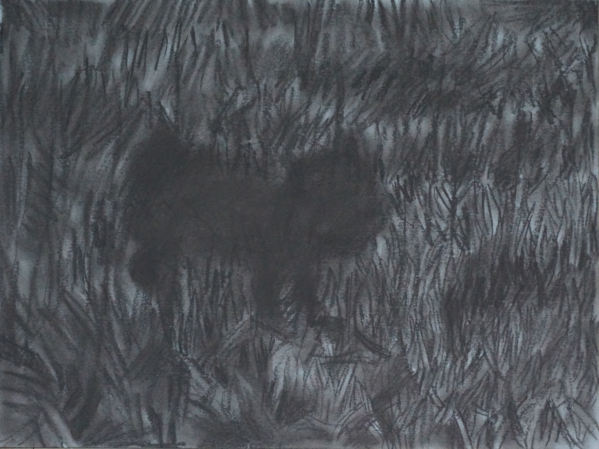
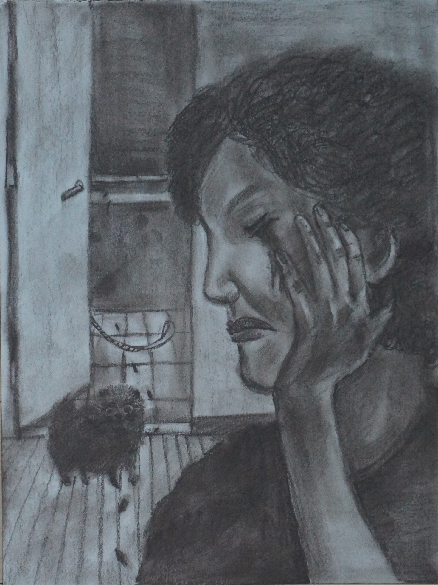

마크 롤랜즈의 책 『철학자와 늑대』 (원제: The philosopher and the wolf) 중 문장을 발췌하고 그 문장으로부터 비롯된 개인의 상상력과 경험들을 김보람이 드로잉하였다.

<브레닌은 이제 없지만 녀석을 생각할때마다 섬세하고 구체적인 내용보다는 그 본질적 이미지가 내 기억속에 남아있다. Brenin is gone now, and when I try to picture him it is difficult to furnish this picture with the details necessary to make it a concrete and living representation. But his essence is still there for me.> 종이에 콘테 230x310

<이 늑대는 행복이 결코 계산으로 이루어 질 수 없음을 알고 있다. 이 늑대는 진정한 관계는 결코 계약에 의해 성립될 수 없다는 것도 알고 있다. This wolf understands that happiness cannot be found in calculation. It understands that no truly significant relationship can ever be based on a contract.> 종이에 콘테 230x310